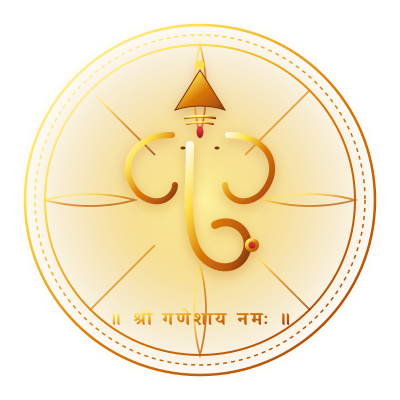

तंत्र ज्ञान: वैदिक ज्योतिष महाग्रंथ
Tantra Gyan: Complete Vedic Astrology Compendium
तंत्र ज्ञान: वैदिक ज्योतिष महाग्रंथ
Tantra Gyan: Complete Vedic Astrology Compendium
© 2026 Ashutosh Kumar Choubey & Tantra Gyan Research Center. All rights reserved.
सर्वाधिकार सुरक्षित। इस ग्रंथ का कोई भी अंश, सारणी अथवा चित्र लेखक एवं प्रकाशक की पूर्व लिखित अनुमति के बिना किसी भी रूप में पुनरुत्पादित नहीं किया जा सकता।
प्रकाशक: तंत्र ज्ञान शोध संस्थान (Tantra Gyan Research Center) • WorldGyan
आधिकारिक शोध मंच: https://t.worldgyan.com
ईमेल: tantraresearchcenter@gmail.com
संपर्क / WhatsApp: +91 9658476170
ISBN: 978-93-5912-108-0
मुद्रण मानक: 6x9 Trade Paperback • WeasyPrint & Paged.js Dual-Target Architecture

निर्विघ्नं कुरु मे देव सर्वकार्येषु सर्वदा॥
यह ग्रंथ समस्त गुरुजनों, वैदिक ऋषियों एवं ज्ञान के पिपासु जिज्ञासुओं को सप्रेम समर्पित है।
ग्रंथ अनुक्रमणिका • Table of Contents
- १. वैदिक ज्योतिष आधार, दर्शन एवं भाव कारकत्व
- २. नवग्रह कारकत्व, १७ शास्त्रीय राजयोग एवं पंच महापुरुष
- ३. राशि चक्र, २७ नक्षत्र एवं विंशोत्तरी महादशा
- ४. दीप्तादि ९ अवस्थाएं एवं भावों में सूर्य फल
- ५. आयुर्-ज्योतिष (Medical Astrology) एवं अर्बुद (कैंसर) रोग विश्लेषण
- ६. नक्षत्र पद विभाजन, नवांश गणित एवं मंगल श्लोक
अध्याय १: वैदिक ज्योतिष आधार, दर्शन एवं भाव कारकत्व
Chapter 1: Foundations, Cosmic Philosophy, 12 Bhavas & Aspects
यथा शिखा मयूराणां नागानां मणयो यथा।
तद्वद्वेदांगशास्त्राणां ज्योतिषं मूर्धनि स्थितम्॥
वैदिक ज्योतिष (Jyotish Shastra) केवल भाग्य बताने का माध्यम नहीं है, अपितु यह काल-विधान, कर्म-सिद्धांत और चेतना के विकास का गूढ़ विज्ञान है। जिस प्रकार मयूरों के सिर पर शिखा और नागों के सिर पर मणि सर्वोच्च स्थान पर सुशोभित होती है, उसी प्रकार समस्त वेदांगों (शिक्षा, कल्प, व्याकरण, निरुक्त, छंद, ज्योतिष) में ज्योतिष शास्त्र को सर्वोच्च "वेद का चक्षु" (Eye of the Veda) कहा गया है।
मानव जीवन में पूर्वजन्म-संचित कर्मों (प्रारब्ध) का प्रकटीकरण जन्म समय के आकाशीय ग्रहीय विन्यास के माध्यम से होता है। लग्न (Ascendant) आत्मा के इस देह में अवतरण का क्षणिक बिंदु है, जहां से संपूर्ण जीवन का खाका १२ भावों में विभाजित हो जाता है।
१.१ कालपुरुष कुण्डली एवं भाव व्यवस्था (The 12 Houses / Bhavas)
जन्म कुण्डली में १२ भाव होते हैं, जो जीवन के समस्त आयामों (शारीरिक, मानसिक, आर्थिक, वैवाहिक, आध्यात्मिक) का संचालन करते हैं। नीचे दिए गए कालपुरुष चक्र में मेष राशि लग्न (प्रथम भाव) में स्थित होकर प्राकृतिक कारकत्व दर्शाती है:
प्रत्येक भाव का शास्त्रीय नाम, उसका जीवन कारकत्व तथा प्राकृतिक स्वामी ग्रह नीचे दी गई सारणी में स्पष्ट किया गया है:
| भाव क्रम | शास्त्रीय नाम | मुख्य जीवन कारकत्व (Significations) | प्राकृतिक स्वामी | श्रेणी |
|---|---|---|---|---|
| १ (प्रथम) | तनु भाव (Lagna) | देह, वर्ण, रूप, आत्मबल, स्वास्थ्य, दीर्घायु, स्वभाव | मेष (मंगल) | केन्द्र / त्रिकोण |
| २ (द्वितीय) | धन भाव (Dhana) | संचित धन, कुटुंब, वाणी, प्रारंभिक शिक्षा, दाहिनी आँख | वृषभ (शुक्र) | मारक भाव |
| ३ (तृतीय) | सहज भाव (Sahaja) | अनुज (छोटे भाई-बहन), पराक्रम, साहस, लेखन, लघु यात्राएं | मिथुन (बुध) | उपचय भाव |
| ४ (चतुर्थ) | सुख भाव (Sukha) | माता, गृह, भूमि, वाहन, अंतःकरण, मानसिक शांति, छाती | कर्क (चन्द्रमा) | केन्द्र भाव |
| ५ (पंचम) | पुत्र भाव (Putra) | संतान, पूर्वपुण्य, बुद्धि, मंत्र साधना, उच्च विवेक, प्रेम | सिंह (सूर्य) | त्रिकोण भाव |
| ६ (षष्ठ) | शत्रु / रोग भाव (Ari) | रोग, ऋण, शत्रु, प्रतिस्पर्धा, मामा, सेवा, दैनिक कार्य | कन्या (बुध) | त्रिक / उपचय |
| ७ (सप्तम) | जाया / कलत्र (Yuvati) | जीवनसाथी, साझेदारी, व्यापार, विदेश गमन, काम-वासना | तुला (शुक्र) | केन्द्र / मारक |
| ८ (अष्टम) | आयु / रन्ध्र (Randhra) | आयु, मृत्यु का कारण, गुप्त विद्याएं, आकस्मिक धन, संकट | वृश्चिक (मंगल) | त्रिक भाव |
| ९ (नवम) | भाग्य / धर्म (Dharma) | धर्म, गुरु, पिता, उच्च शिक्षा, तीर्थाटन, ईश्वरीय कृपा | धनु (गुरु) | परम त्रिकोण |
| १० (दशम) | कर्म भाव (Karma) | आजीविका, प्रतिष्ठा, राज्य पद, सामाजिक अधिकार, घुटने | मकर (शनि) | परम केन्द्र |
| ११ (एकादश) | लाभ भाव (Labha) | आय, ज्येष्ठ भ्राता, मित्र मंडली, महत्वाकांक्षा पूर्ति | कुंभ (शनि) | उपचय भाव |
| १२ (द्वादश) | व्यय भाव (Vyaya) | व्यय, मोक्ष, विदेश वास, शयन सुख, अस्पताल, जेल, हानि | मीन (गुरु) | त्रिक भाव |
१.२ भावों का शास्त्रीय वर्गीकरण (Functional Classification of Houses)
महर्षि पराशर ने फलित के गहन विश्लेषण हेतु भावों को चार प्रमुख आध्यात्मिक व भौतिक श्रेणियों में विभाजित किया है:
- केन्द्र भाव (१, ४, ७, १०): कुण्डली के चार मुख्य स्तंभ। ये जातक को भौतिक संसार में शक्ति, स्थिरता एवं सामाजिक संप्रभुता प्रदान करते हैं।
- त्रिकोण भाव (१, ५, ९): सर्वाधिक शुभ एवं सात्विक भाव। नवम भाव परम भाग्य एवं पंचम भाव पूर्वजन्म की संचित मेधा है। प्रथम भाव केन्द्र और त्रिकोण दोनों होने से सर्वोत्कृष्ट है।
- उपचय भाव (३, ६, १०, ११): वृद्धि के भाव। इन भावों में पापी ग्रह (सूर्य, मंगल, शनि, राहु) समय के साथ जातक को संघर्ष के पश्चात विजय और अपार सफलता दिलाते हैं।
- त्रिक भाव (६, ८, १२): कष्ट, विघ्न एवं विसर्जन के भाव। ६ठा भाव रोग व ऋण का है, ८वां भाव मृत्यु व अप्रत्याशित परिवर्तनों का है, और १२वां भाव व्यय व मोक्ष का है।
- मारक भाव (२, ७): जीवन ऊर्जा को सीमित करने वाले भाव। मारक दशा में स्वास्थ्य एवं आयु का विशेष विचार किया जाता है।
१.३ ग्रहों की दृष्टियां (Planetary Aspects / Drishti)
वैदिक ज्योतिष में ग्रह अपने स्थान के अतिरिक्त अन्य भावों को भी पूर्ण दृष्टि से देखते हैं:
- सर्वग्रह दृष्टि: समस्त ग्रह अपने स्थित भाव से ७वें भाव को पूर्ण (१००%) दृष्टि से देखते हैं।
- मंगल की विशेष दृष्टियां: ७वें भाव के अतिरिक्त ४थे एवं ८वें भाव पर पूर्ण दृष्टि।
- बृहस्पति (गुरु), राहु एवं केतु की विशेष दृष्टियां: ७वें भाव के अतिरिक्त ५वें एवं ९वें भाव पर अमृतमय पूर्ण दृष्टि।
- शनि की विशेष दृष्टियां: ७वें भाव के अतिरिक्त ३रे एवं १०वें भाव पर तीक्ष्ण पूर्ण दृष्टि।
अध्याय २: नवग्रह कारकत्व, १७ शास्त्रीय राजयोग एवं पंच महापुरुष
Chapter 2: Navagraha Karakatva, 17 Classical Raja Yogas & Transits
सूर्योऽऽत्मा जगतस्तस्थुषश्चन्द्रमा मन उच्यते।
सत्त्वं कुजः सोमसुतो वाणी वाचस्पतिर्धियम्॥
नौ आकाशीय शक्तियां (सूर्य, चन्द्रमा, मंगल, बुध, गुरु, शुक्र, शनि, राहु, केतु) मानव चेतना, देह, विचार एवं कर्मफलों के प्रतिनिधि हैं। सूर्य आत्मा है, चन्द्रमा मन है, मंगल पराक्रम व रक्त है, बुध वाणी व विवेक है, बृहस्पति ज्ञान व प्रज्ञा है, शुक्र वीर्य व सौंदर्य है, शनि आयु व कर्मदंड है, तथा राहु व केतु प्रारब्ध के कर्म-बंधन हैं।
२.१ नवग्रह शास्त्रीय कारकत्व सारणी (Navagraha Significator Matrix)
नीचे दी गई सारणी में नवग्रहों के संपूर्ण शास्त्रीय कारकत्व, उच्च-नीच अंश तथा ग्रंथ संदर्भ संकलित किए गए हैं:
| ग्रह | देह व अवयव | स्वभाव व मानसिक वृत्ति | संबंध व स्वजन | उच्च राशि (अंश) | नीच राशि (अंश) | मूलत्रिकोण |
|---|---|---|---|---|---|---|
| सूर्य (Sun) | हृदय, अस्थि, नेत्र तेज, प्राण-शक्ति | आत्मसम्मान, राजसी तेज, नेतृत्व | पिता, शासक, नरेश | मेष (१०°) | तुला (१०°) | सिंह (०°-२०°) |
| चन्द्र (Moon) | रक्त संचार, शारीरिक द्रव, आमाशय, मन | संवेदनशीलता, शांति, कल्पनाशक्ति | माता, राजसी स्त्रियां | वृषभ (३°) | वृश्चिक (३°) | वृषभ (४°-३०°) |
| मंगल (Mars) | मज्जा, रक्त कणिकाएं, मांसपेशियां, पित्त | पराक्रम, क्रोध, त्वरित निर्णय, साहस | अनुज (छोटा भाई), सेनापति | मकर (२८°) | कर्क (२८°) | मेष (०°-१२°) |
| बुध (Mercury) | तंत्रिका तंत्र, त्वचा, वाणी, मस्तिष्क | तर्क, हास्य-विनोद, व्यापारिक बुद्धि | मामा, मित्र, बहन, दूत | कन्या (१५°) | मीन (१५°) | कन्या (१६°-२०°) |
| गुरु (Jupiter) | यकृत (लिवर), वसा, कान, धमनियां | सात्विकता, दया, धर्म-निष्ठा, विवेक | गुरु, पुत्र, विद्वान, ब्राह्मण | कर्क (५°) | मकर (५°) | धनु (०°-१०°) |
| शुक्र (Venus) | वीर्य, प्रजनन अंग, सौंदर्य, नेत्र ज्योति | रसिकता, कला, परिष्कार, ऐश्वर्य | पत्नी, प्रेमिका, कलाकार | मीन (२७°) | कन्या (२७°) | तुला (०°-१५°) |
| शनि (Saturn) | स्नायु, पैर, दांत, अस्थि संधियां (जोड़) | धैर्य, वैराग्य, अनुशासन, कर्मठता | सेवक, श्रमिक, वृद्ध जन | तुला (२०°) | मेष (२०°) | कुंभ (०°-२०°) |
| राहु (Rahu) | श्वसन तंत्र, त्वचा रोग, विषाक्तता | महत्वाकांक्षा, कूटनीति, विद्रोही भाव | दादा, विदेशी जन, विधर्मी | मिथुन / वृषभ | धनु / वृश्चिक | कुंभ |
| केतु (Ketu) | रीढ़, सूक्ष्म नाड़ियां, मोक्ष द्वार | वैराग्य, अंतर्ज्ञान, मौन, संन्यास | नाना, तपस्वी, गुप्त शत्रु | धनु / वृश्चिक | मिथुन / वृषभ | मीन |
२.२ १७ शास्त्रीय राजयोग एवं पंच महापुरुष (17 Classical Raja Yogas)
शास्त्रीय ग्रंथों (बृहत्पाराशर, सारावली, फलदीपिका एवं जातक पारिजात) में वर्णित १७ प्रमुख राजयोग जातक को विपुल धन, सामाजिक ख्याति, राज्य सत्ता एवं अखंड अधिकार प्रदान करते हैं:
१. पंच महापुरुष योग (The 5 Imperial Yogas)
जब भौमादि पांच ग्रह (मंगल, बुध, गुरु, शुक्र, शनि) अपनी स्वराशि, मूलत्रिकोण या उच्च राशि में होकर केन्द्र भाव (१, ४, ७, १०) में स्थित हों:
- रुचक योग (मंगल): पराक्रमी, साहसी, सेनाध्यक्ष या पुलिस प्रमुख, तेजस्वी देह, भू-स्वामी।
- भद्र योग (बुध): प्रखर विद्वान, अद्वितीय वक्ता, व्यापार में निपुण, दीर्घायु, तीव्र स्मरण शक्ति।
- हंस योग (गुरु): धार्मिक, निष्कलंक चरित्र, शास्त्रवेत्ता, राजा या राष्ट्रपति द्वारा सम्मानित, सात्विक जीवन।
- मालव्य योग (शुक्र): वैभवशाली, वाहनों व भवनों का स्वामी, कला-पारखी, सुखी दांपत्य, कामाकर्षक व्यक्तित्व।
- शश योग (शनि): न्यायप्रिय, जन-समूह का नेता, दीर्घायु, कूटनीतिज्ञ, गुप्त साधनों से अपार धनार्जन।
२.३ विपरीत राजयोग (Viparita Raja Yogas: Harsha, Sarala, Vimala)
त्रिक भाव (६, ८, १२) सामान्यतः विनाशकारी माने जाते हैं, किंतु जब इन अशुभ भावों के स्वामी परस्पर केवल त्रिक भावों में ही स्थित हों और किसी शुभ भाव के स्वामी से युत न हों, तो यह "माइनस गुणा माइनस बराबर प्लस" के नियम से प्रचंड राजयोग उत्पन्न करते हैं:
| विपरीत राजयोग | निर्माण नियम (Formation Rule) | शास्त्रीय फल (Predictive Outcome) |
|---|---|---|
| हर्ष योग (Harsha Yoga) | ६ठे भाव का स्वामी केवल ६ठे, ८वें या १२वें भाव में स्थित हो। | शत्रुओं का समूल नाश, अटूट स्वास्थ्य, विपत्तियों में दैवीय रक्षा, न्यायालय में विजय। |
| सरल योग (Sarala Yoga) | ८वें भाव का स्वामी केवल ६ठे, ८वें या १२वें भाव में स्थित हो। | जातक निर्भय, दीर्घायु, अकूत गुप्त संपत्ति का स्वामी, संकटों को अवसर में बदलने वाला। |
| विमल योग (Vimala Yoga) | १२वें भाव का स्वामी केवल ६ठे, ८वें या १२वें भाव में स्थित हो। | स्वतंत्र विचार, अपार आध्यात्मिक शांति, न्यूनतम व्यय से महान साम्राज्य की स्थापना। |
अध्याय ३: राशि चक्र, २७ नक्षत्र एवं विंशोत्तरी महादशा
Chapter 3: Zodiac Signs, 27 Lunar Mansions & Vimshottari Mahadasha
क्षेत्राणि भानि भवनानि च राशयश्च।
मेषादयो नवभिरंघ्रिभिरृक्षमेकम्॥
आकाश मंडल ३६० अंश (Degrees) का एक पूर्ण वृत्त है, जिसे १२ राशियों (प्रत्येक ३० अंश) तथा २७ नक्षत्रों (प्रत्येक १३ अंश २० कला) में विभाजित किया गया है। प्रत्येक नक्षत्र में ४ चरण या पद होते हैं (प्रत्येक पद ३ अंश २० कला)। संपूर्ण राशि चक्र में कुल १०८ नक्षत्र पद होते हैं (२७ × ४ = १०८), जो भारतीय वैदिक गणित का आधार हैं।
३.१ द्वादश राशि तत्व एवं गति स्वभाव (12 Zodiac Signs Matrix)
| राशि क्रम | नाम (Sanskrit / English) | तत्व (Element) | स्वभाव (Modality) | स्वामी ग्रह | शरीर का अंग |
|---|---|---|---|---|---|
| १ | मेष (Aries) | अग्नि (Fire) | चर (Movable) | मंगल (Mars) | मस्तक, कपाल |
| २ | वृषभ (Taurus) | पृथ्वी (Earth) | स्थिर (Fixed) | शुक्र (Venus) | मुख, गला, वाणी |
| ३ | मिथुन (Gemini) | वायु (Air) | द्विस्वभाव (Dual) | बुध (Mercury) | कंधे, हाथ, श्वसन नलिका |
| ४ | कर्क (Cancer) | जल (Water) | चर (Movable) | चन्द्रमा (Moon) | छाती, स्तन, हृदय |
| ५ | सिंह (Leo) | अग्नि (Fire) | स्थिर (Fixed) | सूर्य (Sun) | पेट, रीढ़ की हड्डी |
| ६ | कन्या (Virgo) | पृथ्वी (Earth) | द्विस्वभाव (Dual) | बुध (Mercury) | आंतें, कमर, उदर गुहा |
| ७ | तुला (Libra) | वायु (Air) | चर (Movable) | शुक्र (Venus) | गुर्दे (Kidneys), कटि प्रदेश |
| ८ | वृश्चिक (Scorpio) | जल (Water) | स्थिर (Fixed) | मंगल (Mars) | जननांग, गुदा, मूत्राशय |
| ९ | धनु (Sagittarius) | अग्नि (Fire) | द्विस्वभाव (Dual) | गुरु (Jupiter) | जंघाएं (Thighs), नितंब |
| १० | मकर (Capricorn) | पृथ्वी (Earth) | चर (Movable) | शनि (Saturn) | घुटने, कंकाल संधि |
| ११ | कुंभ (Aquarius) | वायु (Air) | स्थिर (Fixed) | शनि (Saturn) | पिंडलियां, टखने |
| १२ | मीन (Pisces) | जल (Water) | द्विस्वभाव (Dual) | गुरु (Jupiter) | पैर के तलवे, अंगूठे |
३.२ २७ नक्षत्र, उनके स्वामी एवं अधिष्ठाता देवता (The 27 Nakshatras)
प्रत्येक नक्षत्र के स्वामी ग्रह विंशोत्तरी दशा का आरंभ बिंदु निर्धारित करते हैं:
| नक्षत्र क्रम | नक्षत्र नाम | विस्तार (Degrees) | नक्षत्र स्वामी ग्रह | अधिष्ठाता देवता | प्रतीक |
|---|---|---|---|---|---|
| १ | अश्विनी (Ashwini) | ०°००' - १३°२०' मेष | केतु | अश्विनी कुमार (देव-वैद्य) | अश्व का मुख |
| २ | भरणी (Bharani) | १३°२०' - २६°४०' मेष | शुक्र | यमराज (न्याय व धर्म) | योनि / त्रिकोण |
| ३ | कृत्तिका (Krittika) | २६°४०' मेष - १०°००' वृषभ | सूर्य | अग्नि देव (तेज व शुद्धि) | उस्तरा / ज्वाला |
| ४ | रोहिणी (Rohini) | १०°००' - २३°२०' वृषभ | चन्द्रमा | ब्रह्मा / प्रजापति | रथ / बैलगाड़ी |
| ५ | मृगशिरा (Mrigashira) | २३°२०' वृषभ - ६°४०' मिथुन | मंगल | सोम (अमृत व चन्द्र) | हिरण का सिर |
| ६ | आर्द्रा (Ardra) | ६°४०' - २०°००' मिथुन | राहु | रुद्र (तूफान व प्रलय) | अश्रु बिंदु / मणि |
| ७ | पुनर्वसु (Punarvasu) | २०°००' मिथुन - ३°२०' कर्क | गुरु | अदिति (देवमाता) | बाणों का तरकश |
| ८ | पुष्य (Pushya) | ३°२०' - १६°४०' कर्क | शनि | बृहस्पति (दिव्य ज्ञान) | गाय का थन / कमल |
| ९ | आश्लेषा (Ashlesha) | १६°४०' - ३०°००' कर्क | बुध | सर्प / नागराज | कुण्डलित सर्प |
| १० | मघा (Magha) | ०°००' - १३°२०' सिंह | केतु | पितृ गण (पूर्वज) | राज सिंहासन |
| ११ | पूर्वाफाल्गुनी (Purva Phalguni) | १३°२०' - २६°४०' सिंह | शुक्र | भग (ऐश्वर्य व सौभाग्य) | शय्या (झूला) |
| १२ | उत्तराफाल्गुनी (Uttara Phalguni) | २६°४०' सिंह - १०°००' कन्या | सूर्य | अर्यमा (सत्य व न्याय) | मंच / शैय्या |
| १३ | हस्त (Hasta) | १०°००' - २३°२०' कन्या | चन्द्रमा | सविता (सूर्य की जीवन ऊर्जा) | खुला हुआ हाथ |
| १४ | चित्रा (Chitra) | २३°२०' कन्या - ६°४०' तुला | मंगल | त्वष्टा / विश्वकर्मा | चमकीला रत्न |
| १५ | स्वाति (Swati) | ६°४०' - २०°००' तुला | राहु | वायु देव (गति व स्वतंत्रता) | मूंगे का पौधा |
| १६ | विशाखा (Vishakha) | २०°००' तुला - ३°२०' वृश्चिक | गुरु | इंद्राग्नि (इंद्र व अग्नि) | तोरण द्वार |
| १७ | अनुराधा (Anuradha) | ३°२०' - १६°४०' वृश्चिक | शनि | मित्र देव (मैत्री व सहयोग) | विजय पताका |
| १८ | ज्येष्ठा (Jyeshtha) | १६°४०' - ३०°००' वृश्चिक | बुध | इंद्र (देवराज) | कुंडल / छत्र |
| १९ | मूल (Moola) | ०°००' - १३°२०' धनु | केतु | निर्ऋति (विनाश व पुनरुत्थान) | जड़ों का गुच्छा |
| २० | पूर्वाषाढ़ा (Purva Ashadha) | १३°२०' - २६°४०' धनु | शुक्र | अपः (जल देव) | पंखा / सूप |
| २१ | उत्तराषाढ़ा (Uttara Ashadha) | २६°४०' धनु - १०°००' मकर | सूर्य | विश्वेदेव (समस्त देवता) | हाथी का दांत |
| २२ | श्रवण (Shravana) | १०°००' - २३°२०' मकर | चन्द्रमा | भगवान विष्णु (संरक्षक) | तीन पद / कान |
| २३ | धनिष्ठा (Dhanishta) | २३°२०' मकर - ६°४०' कुंभ | मंगल | अष्ट वसु (भौतिक समृद्धि) | मृदंग / ढोल |
| २४ | शतभिषा (Shatabhisha) | ६°४०' - २०°००' कुंभ | राहु | वरुण (सागर व अंतरिक्ष) | १०० चिकित्सकों का वृत्त |
| २५ | पूर्वाभाद्रपद (Purva Bhadrapada) | २०°००' कुंभ - ३°२०' मीन | गुरु | अज एकपाद (अग्नि नाग) | तलवार / दो मुख |
| २६ | उत्तराभाद्रपद (Uttara Bhadrapada) | ३°२०' - १६°४०' मीन | शनि | अहिर्बुध्न्य (समुद्री शेषनाग) | जुड़वां / सर्प |
| २७ | रेवती (Revati) | १६°४०' - ३०°००' मीन | बुध | पूषा (पोषण व मार्गदर्शक) | मछली का युगल |
३.३ १२० वर्षीय विंशोत्तरी महादशा चक्र (120-Year Vimshottari Mahadasha)
वैदिक ज्योतिष में काल-गणना एवं फलित समय-निर्धारण (Timing of Events) का मुख्य आधार विंशोत्तरी महादशा है। मानव की पूर्ण आयु १२० वर्ष मानकर इसे ९ ग्रहों में शास्त्रीय अनुपात में बांटा गया है:
| दशा क्रम | ग्रह | महादशा अवधि (वर्ष) | मुख्य प्रभाव एवं फलित दृष्टिकोण |
|---|---|---|---|
| १ | केतु (Ketu) | ७ वर्ष | आध्यात्मिक उन्मेष, भौतिक विरक्ति, आकस्मिक परिवर्तन, गुप्त विद्याओं की ओर झुकाव |
| २ | शुक्र (Venus) | २० वर्ष | भौतिक ऐश्वर्य, विवाह, वाहन, सौंदर्य, कला, व्यापारिक विस्तार, विलास |
| ३ | सूर्य (Sun) | ६ वर्ष | आत्मबल, प्रशासनिक अधिकार, सरकारी सम्मान, पिता का सहयोग, नेत्र व स्वास्थ्य विचार |
| ४ | चन्द्र (Moon) | १० वर्ष | मानसिक शांति, माता का सुख, यात्राएं, कल्पनाशक्ति, जन-समर्थन, रचनात्मकता |
| ५ | मंगल (Mars) | ७ वर्ष | साहस, भूमि क्रय-विक्रय, रक्त व मज्जा की सक्रियता, तकनीकी कार्य, विवाद अथवा विजय |
| ६ | राहु (Rahu) | १८ वर्ष | तीव्र महत्वाकांक्षा, विदेशी यात्राएं, अकूत धनार्जन, अप्रत्याशित उत्थान-पतन, कूटनीति |
| ७ | गुरु (Jupiter) | १६ वर्ष | ज्ञान, संतान प्राप्ति, धर्मानुष्ठान, उच्च पद, गुरु कृपा, विवेक एवं आर्थिक स्थिरता |
| ८ | शनि (Saturn) | १९ वर्ष | कठोर परिश्रम, अनुशासन, कर्मफल भुगतान, जन-सामान्य से जुड़ाव, दीर्घकालिक सफलता |
| ९ | बुध (Mercury) | १७ वर्ष | व्यापारिक उन्नति, संचार, लेखा, लेखन, तार्किक विवेक, बौद्धिक शिखर |
अध्याय ४: दीप्तादि ९ अवस्थाएं एवं भावों में सूर्य फल
Chapter 4: Deeptadi 9 Planetary States & Solar House Positions
दीप्तः स्वोच्चे स्वस्थः स्वगृहे मुदितोऽधिमित्रे शान्तः सुहृदि।
दीनोऽसमर्थशत्रौ दुःखी विकलः खलोऽधमे कोपो रणे॥
कुण्डली में किसी ग्रह का केवल शुभ भाव में बैठना ही पर्याप्त नहीं होता, अपितु यह देखना अनिवार्य है कि वह ग्रह चेतना के किस स्तर पर कार्य कर रहा है। महर्षि पराशर एवं कल्याण वर्मा ने ग्रहों की ९ दीप्तादि अवस्थाओं का प्रतिपादन किया है, जो ग्रह के वास्तविक शुभाशुभ फल की तीव्रता और गुणवत्ता निर्धारित करती हैं।
४.१ ग्रहों की दीप्तादि ९ अवस्थाएं (Deeptadi 9 Planetary Dignities)
| अवस्था क्रम | अवस्था नाम | स्थिति एवं खगोलीय मर्यादा (Astronomical Position) | फल की तीव्रता (Potency) | वास्तविक जीवन प्रभाव (Life Manifestation) |
|---|---|---|---|---|
| १ | दीप्त (Deepta) | ग्रह अपनी परम उच्च राशि (Exaltation) में स्थित हो। | १००% पूर्ण शुभ फल | राज्य सम्मान, अदम्य आत्मविश्वास, सार्वभौम कीर्ति, विपुल ऐश्वर्य। |
| २ | स्वस्थ (Swastha) | ग्रह अपनी स्वराशि (Own Sign) या मूलत्रिकोण में हो। | ८५% उच्च शुभ फल | स्थिरता, गृह-सुख, निष्कलंक स्वास्थ्य, स्वावलंबी जीवन, आत्म-संतोष। |
| ३ | मुदित (Mudita) | ग्रह अपने अधिमित्र (Great Friend) की राशि में हो। | ७५% शुभ फल | प्रसन्नता, मित्रों व परिजनों का अटूट सहयोग, आर्थिक सुख, सुरुचिपूर्ण जीवन। |
| ४ | शांत (Shanta) | ग्रह अपने मित्र (Friend) की राशि में स्थित हो। | ६०% अनुकूल फल | शांतिपूर्ण प्रगति, सहज कार्य सिद्धि, सामान्य सुख, धार्मिक अभिरुचि। |
| ५ | दीन (Deena) | ग्रह अपने सम (Neutral) ग्रह की राशि में स्थित हो। | ४०% मध्यम फल | औसत जीवन, सामान्य संघर्ष, न विशेष हानि न विशेष लाभ। |
| ६ | दुखित (Dukhita) | ग्रह अपने शत्रु (Enemy) की राशि में स्थित हो। | २५% कष्टप्रद फल | मानसिक उद्वेग, पारिवारिक कलह, स्थान परिवर्तन, कार्यों में अकारण विघ्न। |
| ७ | विकल (Vikala) | ग्रह सूर्य की किरणों से अत्यंत निकट होकर अस्त (Combust) हो। | १०% क्षीण फल | आत्मबल का अभाव, रोग, संबंधियों से उपेक्षा, प्रयासों का श्रेय न मिलना। |
| ८ | खल (Khala) | ग्रह अपनी नीच राशि (Debilitation) में स्थित हो। | ०-१५% दूषित फल | संकीर्ण मनोवृत्ति, आर्थिक संकट, अपयश, नीच संगति, असाध्य रोग। |
| ९ | कोप (Kopa) | ग्रह ग्रह-युद्ध (Planetary War) में अन्य ग्रह से पराजित हो। | अत्यंत अनिष्ट फल | धन-हानि, मानसिक अवसाद, पराजय का भय, परिजनों से घोर विछोह। |
४.२ पंचधा मैत्री सिद्धांत (The Five-Fold Relationship Matrix)
ग्रहों के आपसी संबंध केवल स्थायी (नैसर्गिक) नहीं होते, अपितु कुण्डली में उनकी तात्कालिक स्थिति भी मित्रता या शत्रुता तय करती है:
४.३ सूर्य देव का द्वादश भावों में शास्त्रीय फल (Sun Across 12 Houses)
सूर्य संपूर्ण सौरमंडल की आत्मा एवं जीवन-ऊर्जा का मूल स्रोत हैं। १२ भावों में सूर्य का फल निम्नानुसार है:
- प्रथम भाव (तनु): जातक तेजस्वी, गौरवर्ण, स्वाभिमानी, क्रोधी, नेत्र ज्योति पर प्रभाव, नेतृत्व क्षमता से संपन्न।
- द्वितीय भाव (धन): मुख में तेज, स्पष्ट व कटु वाणी, पैतृक संपत्ति से लाभ अथवा विवाद, नेत्र विकार की संभावना।
- तृतीय भाव (सहज): प्रचंड पराक्रमी, शत्रुओं पर विजय, बंधु-बांधवों में प्रतिष्ठित, लेखन व युद्ध में अजेय।
- चतुर्थ भाव (सुख): मातृ-सुख में कमी, गृह से दूर वास, वाहनों का सुख, सीने में उष्णता या पित्त की अधिकता।
- पंचम भाव (पुत्र): तीक्ष्ण बुद्धि, मंत्र विद्या में सिद्धि, संतान की संख्या सीमित, पाचन तंत्र में पित्त प्रकोप।
- षष्ठ भाव (शत्रु): शत्रुओं का समूल नाश, प्रशासनिक विजय, ऋण से मुक्ति, उत्तम पाचन शक्ति, मामा पक्ष पर प्रभाव।
- सप्तम भाव (जाया): दांपत्य में अहं का टकराव, जीवनसाथी स्वाभिमानी, साझेदारी में सावधान रहने की आवश्यकता।
- अष्टम भाव (आयु): रहस्यमयी ज्ञान, नेत्र विकार की आशंका, गुप्त धन की प्राप्ति, पित्त विकार, दीर्घायु।
- नवम भाव (भाग्य): अत्यंत भाग्यशाली, पिता व गुरु का भक्त, धार्मिक अनुष्ठानकर्ता, समाज में पूज्य।
- दशम भाव (कर्म): दिग्बली सूर्य (Digbala)। जातक राजा या सरकार का मुख्य अधिकारी, असीम प्रतिष्ठा, अटूट सत्ता।
- एकादश भाव (लाभ): अपार धन लाभ, उच्च पदाधिकारियों से मित्रता, महत्वाकांक्षाओं की पूर्ण सिद्धि, निरोगी काया।
- द्वादश भाव (व्यय): आध्यात्मिक मुक्ति, विदेश यात्राएं, नेत्र दुर्बलता, अस्पताल या राजकीय व्यय, एकांतप्रियता।
अध्याय ५: आयुर्-ज्योतिष (Medical Astrology) एवं अर्बुद (कैंसर) रोग विश्लेषण
Chapter 5: Medical Astrology & Oncological Cellular Diagnostics
कर्मजा व्याधयो ये स्युर्न ते शाम्यन्ति भेषजैः।
प्रायश्चित्तैः प्रशाम्यन्ति जपहोमार्चनादिभिः॥
आयुर्-ज्योतिष (Medical Astrology) चरक, सुश्रुत और पराशर के ज्ञान का दिव्य समन्वय है। रोग केवल जैविक या भौतिक कारणों से ही नहीं होते, अपितु वे पूर्वजन्म-कृत अशुभ कर्मों (कर्मज व्याधि) के परिणाम होते हैं। जब कुण्डली में रोगकारक ग्रह सक्रिय होते हैं, तब शरीर के त्रिदोष (वात, पित्त, कफ) में असंतुलन उत्पन्न होकर असाध्य रोगों का रूप ले लेता है।
५.१ आयुर्-ज्योतिष अंग एवं ग्रह अधिकार (Anatomical Rulerships)
| ग्रह | शारीरिक धातु (Dhatu) | त्रिदोष प्रकृति | प्रभावित अंग एवं अवयव |
|---|---|---|---|
| सूर्य (Sun) | अस्थि (Bones) | पित्त (Pitta) | हृदय, दाहिना नेत्र, मस्तिष्क, जीवन-ऊर्जा (प्राण), रक्तचाप |
| चन्द्र (Moon) | रस व रक्त द्रव (Plasma/Blood) | कफ व वात | फेफड़े, छाती, आमाशय, बायां नेत्र, लिंफेटिक तंत्र, गर्भाशय |
| मंगल (Mars) | मज्जा व लाल रक्त कण (Bone Marrow/RBC) | पित्त (Pitta) | यकृत, पित्ताशय, मांसपेशियां, जननांग, सूजन, विद्रधि |
| बुध (Mercury) | त्वचा (Skin) | त्रिदोष (सम) | तंत्रिका तंत्र (Nerves), मस्तिष्क के सेरिब्रम, फेफड़े की नलिकाएं |
| गुरु (Jupiter) | वसा (Fat / Adipose Tissue) | कफ (Kapha) | यकृत (Liver), धमनियां, कान, अग्न्याशय (Pancreas) |
| शुक्र (Venus) | शुक्र / वीर्य (Semen / Ovaries) | वात व कफ | वृक्क (Kidneys), मूत्र मार्ग, प्रजनन ग्रंथियां, हार्मोन संतुलन |
| शनि (Saturn) | स्नायु व मांसपेशियां (Tendons/Nerves) | वात (Vata) | जोड़, अस्थि-संधि, पैर, बड़ी आंत, दीर्घकालिक क्षय, ट्यूमर |
| राहु (Rahu) | विषाक्तता (Toxins / Mutagens) | वात (Vata) | अनियंत्रित कोशिका विभाजन, ऑटो-इम्यून विकार, रहस्यमयी संक्रमण |
| केतु (Ketu) | सूक्ष्म नाड़ियां व कोशिकाएं | पित्त (Pitta) | शल्य क्रिया, फोड़े, कीटाणु संक्रमण, असाध्य अवरोध |
५.२ अर्बुद (कैंसर) रोग का ज्योतिषीय सूत्र विश्लेषण (Oncology / Arbuda Roga)
अर्बुद (कैंसर) रोग का मूल कारण कोशिकाओं का अनियंत्रित, अनियोजित एवं आक्रामक रूप से विभाजित होना है। वैदिक ज्योतिष के अनुसार कैंसर का निर्माण किसी एक ग्रह से नहीं, बल्कि एक जटिल ग्रहीय सिंड्रोम से होता है:
विभिन्न अंगों के कैंसर के विशिष्ट ग्रहीय योग:
| कैंसर का प्रकार | प्रभावित भाव व ग्रह | विशिष्ट शास्त्रीय ग्रहीय युति |
|---|---|---|
| रक्त कैंसर (Leukemia) | चन्द्रमा, मंगल एवं षष्ठेश | चन्द्रमा और मंगल पर राहु या शनि की कुदृष्टि, षष्ठ भाव में नीच का मंगल राहु से युक्त। |
| स्तन एवं फेफड़े का कैंसर | चतुर्थ भाव एवं कर्क राशि | चतुर्थेश का ६ठे या ८वें भाव में राहु-शनि से पीड़ित होना, कर्क राशि में पापी ग्रहों का जमावड़ा। |
| मस्तिष्क का अर्बुद (Brain Tumor) | प्रथम भाव एवं मेष राशि | लग्नेश मेष राशि में राहु-केतु अक्ष पर होकर शनि या वक्री मंगल द्वारा देखा जाना। |
| त्वचा का कैंसर (Melanoma) | बुध, षष्ठ भाव एवं कन्या राशि | बुध का नीच राशि में राहु से युत होकर सूर्य द्वारा अत्यधिक दग्ध होना। |
| उदर व आंतों का कैंसर | पंचम व षष्ठ भाव | गुरु या बुध का राहु के साथ षष्ठ भाव में स्थित होकर पाप ग्रहों से पीड़ित होना। |
५.३ दशा-गोचर प्रकटीकरण एवं ज्योतिषीय निवारण (Timing & Remedies)
कैंसर रोग का प्रकटीकरण तभी होता है जब:
१. जातक की मारक (२, ७) अथवा त्रिक भावों (६, ८, १२) के स्वामियों की विंशोत्तरी दशा चल रही हो।
२. गोचर में राहु अथवा शनि लग्न, लग्नेश अथवा चन्द्र राशि के ऊपर से या अष्टम भाव से भ्रमण कर रहे हों।
अध्याय ६: नक्षत्र पद विभाजन, नवांश गणित एवं मंगल श्लोक
Chapter 6: Nakshatra Pada Sub-Division, Navamsha & Concluding Shlokas
नवांशाद्बलिनो ज्ञेयं कलत्रस्य बलाबलम्।
तथैव भाग्यवृद्धिश्च धर्ममार्गरतिस्तथा॥
कुण्डली का स्थूल शरीर लग्न कुण्डली (D1) है, किंतु उसकी सूक्ष्म आत्मा नवांश कुण्डली (D9) है। नवांश का अर्थ है किसी राशि का ९वां भाग (३°२०')। चूंकि २७ नक्षत्रों में प्रत्येक के ४ पद होते हैं, अतः संपूर्ण भचक्र में १०८ नवांश पद होते हैं। नवांश से जातक के आंतरिक सामर्थ्य, दांपत्य जीवन, भाग्य की वास्तविकता तथा उत्तरार्ध जीवन का सटीक ज्ञान प्राप्त होता है।
६.१ नवांश पद गणना सिद्धांत (Navamsha Mathematics)
नवांश की गणना राशियों के चर, स्थिर एवं द्विस्वभाव स्वभाव के अनुसार की जाती है:
- चर राशियां (मेष, कर्क, तुला, मकर): नवांश की गणना उसी राशि से प्रारंभ होती है (मेष का प्रथम नवांश मेष से, कर्क का कर्क से)।
- स्थिर राशियां (वृषभ, सिंह, वृश्चिक, कुंभ): नवांश की गणना उस राशि से ९वें स्थान से प्रारंभ होती है (वृषभ का प्रथम नवांश मकर से)।
- द्विस्वभाव राशियां (मिथुन, कन्या, धनु, मीन): नवांश की गणना उस राशि से ५वें स्थान से प्रारंभ होती है (मिथुन का प्रथम नवांश तुला से)।
६.२ प्रमुख नक्षत्र पदों का सूक्ष्म फलित (Pada Micro-Analysis)
नीचे तीन महत्वपूर्ण नक्षत्रों के पदों का व्यावहारिक फलित दिया गया है:
| नक्षत्र | पद क्रम | नवांश राशि व स्वामी | मनोवैज्ञानिक प्रवृत्ति व फलित संकेत |
|---|---|---|---|
| अश्विनी (Ashwini) | प्रथम पद (१) | मेष (मंगल) | तीव्र ऊर्जा, साहसी, नेतृत्व क्षमता, त्वरित कार्य सिद्धि, अग्रणी स्वभाव। |
| द्वितीय पद (२) | वृषभ (शुक्र) | भौतिक स्थिरता, रूपवान, व्यावहारिक ज्ञान, कला व धन संचय की रुचि। | |
| तृतीय पद (३) | मिथुन (बुध) | बौद्धिक चंचलता, संचार कला, हास्य-विनोद, बहुमुखी प्रतिभा। | |
| चतुर्थ पद (४) | कर्क (चन्द्रमा) | संवेदनशील, दूसरों की सेवा करने वाला, उत्कृष्ट चिकित्सक, भावनात्मक मन। | |
| पुष्य (Pushya) | प्रथम पद (१) | सिंह (सूर्य) | आध्यात्मिक तेज, पैतृक गौरव, न्यायप्रियता, राजदरबार में सम्मान। |
| द्वितीय पद (२) | कन्या (बुध) | सूक्ष्म विश्लेषण, सेवा भाव, व्यावहारिक योजनाकार, संयमित वाणी। | |
| तृतीय पद (३) | तुला (शुक्र) | सामाजिक सौहार्द, सुरुचिपूर्ण जीवन, निष्पक्ष न्याय, व्यापारिक सफलता। | |
| चतुर्थ पद (४) | वृश्चिक (मंगल) | गुप्त साधना, गूढ़ विद्याओं का ज्ञाता, गहन अंतर्दृष्टि, आक्रामक संकल्प। | |
| आश्लेषा (Ashlesha) | प्रथम पद (१) | धनु (गुरु) | दार्शनिक सोच, उच्च आकांक्षाएं, कूटनीति में दक्ष, शास्त्रों का अभ्यासी। |
| द्वितीय पद (२) | मकर (शनि) | कठोर परिश्रम, महत्वाकांक्षा, धैर्यपूर्वक लक्ष्य प्राप्ति, स्वार्थ नियंत्रण। | |
| तृतीय पद (३) | कुंभ (शनि) | गुप्त अनुसंधान, जन-कल्याण, वैज्ञानिक दृष्टिकोण, अलौकिक आकर्षण। | |
| चतुर्थ पद (४) | मीन (गुरु) | मोक्ष प्राप्ति की लालसा, मोह-माया से विरक्ति, पूर्ण समर्पण, तांत्रिक अंतःप्रेरणा। |
६.३ उपनिषद् मंगल कामना एवं शांति पाठ (Universal Benediction)
ॐ असतो मा सद्गमय।
तमसो मा ज्योतिर्गमय।
मृत्योर्मा अमृतं गमय॥
ॐ शान्तिः शान्तिः शान्तिः॥
हे परमात्मा! हमें असत्य से सत्य की ओर ले चलो, अंधकार से प्रकाश की ओर ले चलो, और मृत्यु से अमरत्व की ओर ले चलो। तीनों लोकों में दैहिक, दैविक और भौतिक तापों की पूर्ण शांति हो।
सर्वे भवन्तु सुखिनः सर्वे सन्तु निरामयाः।
सर्वे भद्राणि पश्यन्तु मा कश्चिद्दुःखभाग्भवेत्॥
समस्त प्राणी सुखी हों, सभी रोगमुक्त व स्वस्थ रहें, सभी का कल्याण हो, और इस संसार में किसी को भी लेशमात्र भी दुःख न भोगना पड़े।
६.४ ग्रंथ समापन एवं कृतज्ञता ज्ञापन (Colophon)
तंत्र ज्ञान: वैदिक ज्योतिष महाग्रंथ का यह प्रथम ट्रेड पेपरबैक एवं डिजिटल ग्रंथ संस्करण प्रामाणिक संकलन, शास्त्रीय सूत्रों के अनुसंधान एवं आधुनिक विश्लेषणात्मक प्रारूप के साथ लोक-हितार्थ समर्पित किया जाता है।
- ग्रंथकार एवं शोधकर्ता: ज्योतिषाचार्य आशुतोष कुमार चौबे (Ashutosh Kumar Choubey)
- आधिकारिक अनुसंधान केन्द्र: तंत्र ज्ञान शोध संस्थान (Tantra Gyan Research Center)
- वेबसाइट: t.worldgyan.com
- यूट्यूब शोध मंच: @TantraGyan108
- ईमेल: tantraresearchcenter@gmail.com
- संस्करण वर्ष: २०२६ (Digital & Print Masterwork Edition)
ग्रंथ विवरण एवं प्रकाशन सूचना
ग्रंथ: तंत्र ज्ञान: वैदिक ज्योतिष महाग्रंथ (Tantra Gyan: Complete Vedic Astrology Compendium)
लेखक: आशुतोष कुमार चौबे (Ashutosh Kumar Choubey)
संस्थान: तंत्र ज्ञान शोध संस्थान (Tantra Gyan Research Center) • WorldGyan
प्रकाशन वर्ष: 2026 • संस्करण: डिजिटल एवं प्रिंट मास्टरवर्क संस्करण (First Trade Paperback Edition 2026)
मुद्रण विनिर्देश: Standard Trade Paperback (6" × 9"), 0.85in inside gutter, dual-target vector typography.